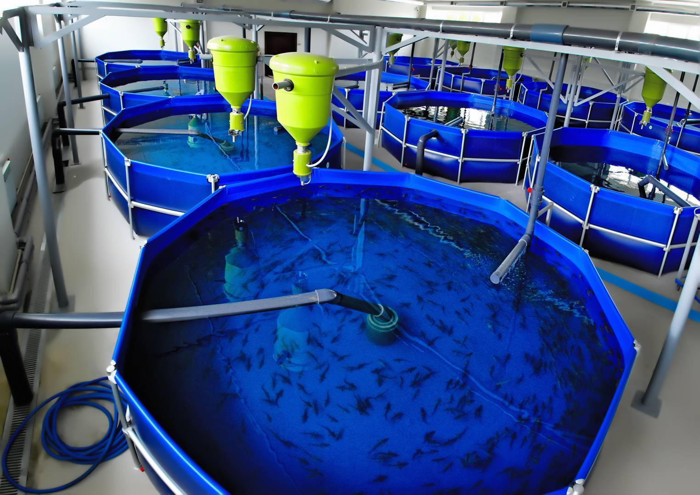
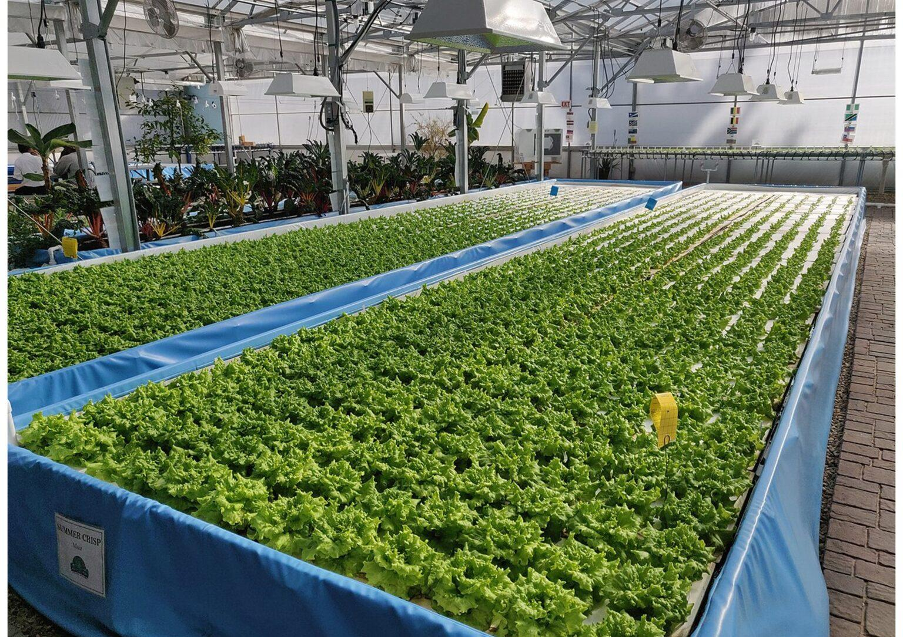

Advanced Aquaculture & Circular Bioeconomy
We engineer production systems so that every waste stream becomes an input somewhere else, reducing aquaculture’s dependence on wild-caught fishmeal. The line runs in four parts:
01 Zero Discharge Aquaculture System
RAS designed to discharge nothing: water is treated and reused in place, ammonia is removed electrochemically, and nutrients are recovered rather than released.
Now underway: electrochemical aquaculture systems for zero discharge — saline RAS coupled to freshwater algae, harvested by electrocoagulation (USDA NIFA, Co-PI, 2026 — present)
02 Off-Grid Multiloop Aquaponics
Fish, plant and anaerobic-digestion loops coupled so that solids become biogas and biofertiliser while the system runs off-grid. Built for arid and remote sites where water and energy set the limit.
Representative work: near-zero-waste aquaponics with onsite anaerobic digestion (Sci. Total Environ. 2022; Resour. Conserv. Recycl. 2024); off-grid operation in “Green energy to blue food” (Energy Nexus 2026)
03 Biofloc / Single Cell Protein
Biofloc and microbial biomass grown on aquaculture effluent turn dissolved waste into single cell protein that returns as feed. Insect biorefineries handle solid wastes.
Representative work: microbial biomass from RAS effluent fed back to barramundi (Aquaculture 2023); waste-to-protein via microaerophilic assimilation in brackishwater RAS (J. Water Process Eng. 2026); shrimp-shell biorefinery via black soldier fly (2026)
04 Microalgae
Microalgae photobioreactors polish RAS wastewater as the loop’s final step. A full performance and LCA study is in preparation.